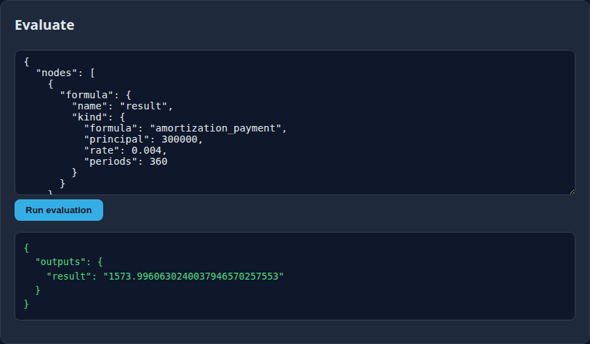

Amortization Payment
amortization_payment
The level payment that pays off a loan over its full term.
PMT = P × r(1+r)ⁿ ÷ ((1+r)ⁿ − 1)
A $300,000 mortgage, 0.4% monthly, over 360 months.
| Port | Value |
|---|---|
| principal | 300000 |
| rate | 0.004 |
| periods | 360 |
Result
1573.996063…

1573.9960630240037946570257553